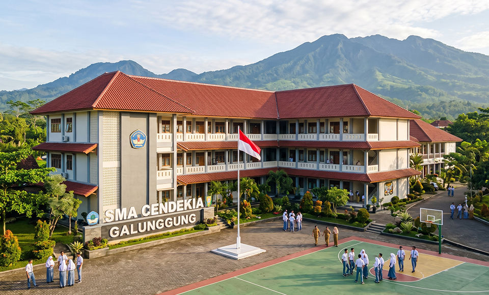
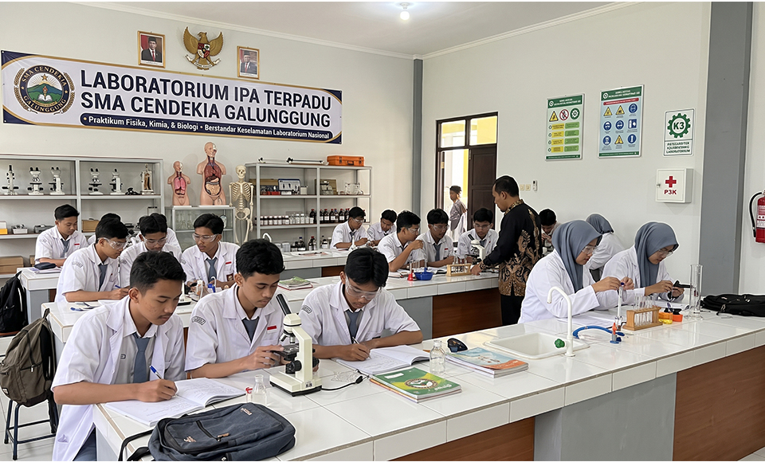
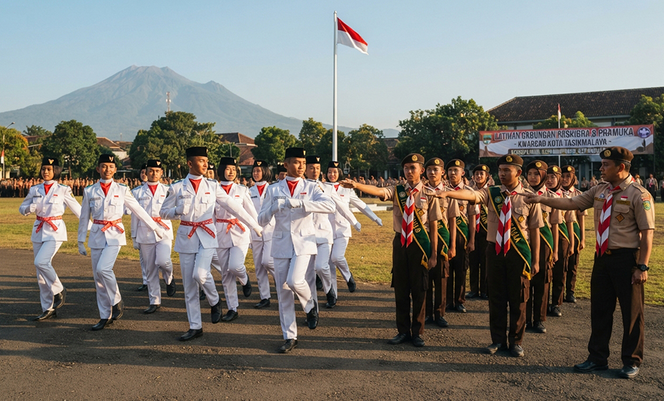

Rekam jejak aktivitas pembelajaran, prestasi siswa, fasilitas sekolah, dan kegiatan ekstrakurikuler. Klik foto untuk memperbesar.
Laboratorium Komputer • Klik untuk detail
Prestasi Provinsi • Klik untuk detail

Fasilitas Sekolah • Klik untuk detail

Laboratorium IPA • Klik untuk detail

Ekstrakurikuler • Klik untuk detail
Fasilitas Literasi • Klik untuk detail